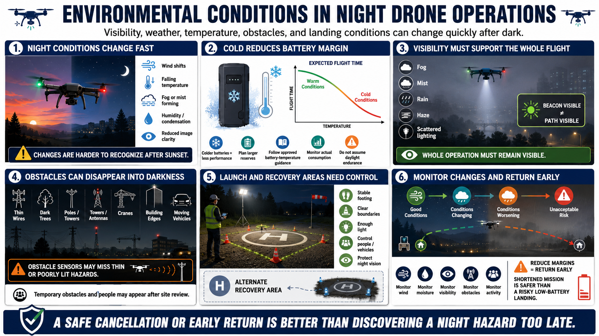

Environmental Risk at Night
Connecting to LMS... Progress: in progress

Narration
Environmental conditions can become harder to recognize after sunset. Wind shifts may be less visible, temperature may fall, and fog or mist can form. Humidity and condensation can affect lenses, sensors, electronics, and image quality.
Cold night temperatures can reduce battery performance and usable flight time. Plan with larger reserves, follow approved battery-temperature guidance, and monitor actual consumption rather than assuming daylight endurance.
Fog, mist, precipitation, and haze reduce visibility and can scatter aircraft or ground lighting. A light may remain visible even when the surrounding obstacles and flight path are not. Visibility must support the whole operation, not just sight of one beacon.
Wires, trees, poles, towers, building edges, cranes, and vehicles can blend into dark backgrounds. Temporary obstacles and people may appear after the site review. Obstacle sensors may miss thin or poorly illuminated features.
Launch and recovery areas need stable footing, clear boundaries, sufficient light, and control of people and vehicles. Protect crew night vision while making the landing surface and hazards identifiable. Prepare an alternate recovery area.
Monitor changes throughout the flight. If temperature, wind, moisture, visibility, obstacles, or activity reduce margins, return early. A safe cancellation or shortened mission is better than discovering a night hazard during a low-battery landing.